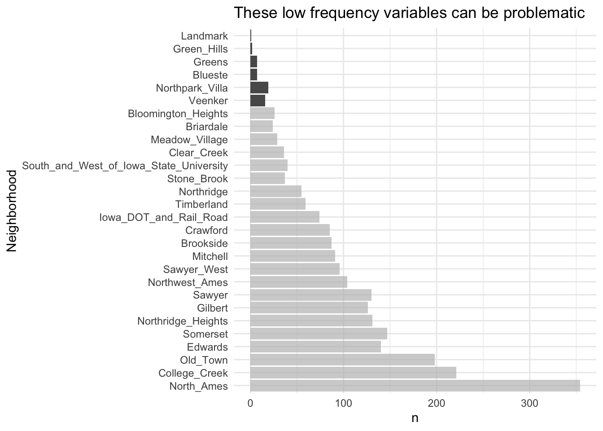

This notebook summaries key point from Hadley Wickham’s Tidy Model with R. The book only covers basic usage of tidy-model and some other dimension reduction techniques.
set.seed(52)# To put 60% into training, 20% in validation, and 20% in testing:ames_val_split <- rsample::initial_validation_split(ames, prop =c(0.6, 0.2))ames_val_split
independent experimental unit: (knowing database basic this is just matter of object uid versus alternate uid) for example, measuring one patient
multi-level-data/multiple rows per experimental unit:
Data splitting should occur at the independent experimental unit level of the data!!!
Simple resampling across rows would lead to some data within an experimental unit being in the training set and others in the test set.
Pracrtical Implication
the book admit the practice of train and split at first for a validation of the model but follow up using all the data point possible for a better estimation of data.
Fitting Model with Parsnip
linear_reg
rand_forest
Linear Regression Family
lm
glmnet: fits generalised linear and model via penalized maximum likelihood.
stan
# switch computational backend for different modellinear_reg() |>set_engine("lm") |>translate()
Linear Regression Model Specification (regression)
Computational engine: lm
Model fit template:
stats::lm(formula = missing_arg(), data = missing_arg(), weights = missing_arg())
# regularized regression is the glmnet model linear_reg(penalty=1) |>set_engine("glmnet") |>translate()
Linear Regression Model Specification (regression)
Main Arguments:
penalty = 1
Computational engine: glmnet
Model fit template:
glmnet::glmnet(x = missing_arg(), y = missing_arg(), weights = missing_arg(),
family = "gaussian")
# To estimate with regularization, the second case, a Bayesian model can be fit using the rstanarm package:linear_reg() |>set_engine("stan") |>translate()
Linear Regression Model Specification (regression)
Computational engine: stan
Model fit template:
rstanarm::stan_glm(formula = missing_arg(), data = missing_arg(),
weights = missing_arg(), family = stats::gaussian, refresh = 0)
Random Forest Model Specification (regression)
Main Arguments:
trees = 1000
min_n = 5
Computational engine: ranger
Model fit template:
ranger::ranger(x = missing_arg(), y = missing_arg(), weights = missing_arg(),
num.trees = 1000, min.node.size = min_rows(~5, x), num.threads = 1,
verbose = FALSE, seed = sample.int(10^5, 1))
Capture Model Results
Raw original way (useful to check og documentation)
lm_form_fit <- lm_model %>%# Recall that Sale_Price has been pre-loggedfit(Sale_Price ~ Longitude + Latitude, data = ames_train)lm_form_fit %>%extract_fit_engine() %>%vcov()
(Intercept) Longitude Latitude
(Intercept) 273.852441 2.052444651 -1.942540743
Longitude 2.052445 0.021122353 -0.001771692
Latitude -1.942541 -0.001771692 0.042265807
model_res <- lm_form_fit %>%extract_fit_engine() %>%summary()# The model coefficient table is accessible via the `coef` method.param_est <-coef(model_res)class(param_est)
[1] "matrix" "array"
param_est
Estimate Std. Error t value Pr(>|t|)
(Intercept) -313.622655 16.5484876 -18.95174 5.089063e-73
Longitude -2.073783 0.1453353 -14.26896 8.697331e-44
Latitude 2.965370 0.2055865 14.42395 1.177304e-44
## set up parsnip linear modellm_model <-linear_reg() %>%set_engine("lm")## add this model to workflow (pipline)lm_wflow <-workflow() %>%add_model(lm_model)lm_wflow
══ Workflow ════════════════════════════════════════════════════════════════════
Preprocessor: None
Model: linear_reg()
── Model ───────────────────────────────────────────────────────────────────────
Linear Regression Model Specification (regression)
Computational engine: lm
You have to go through each model one by one to see what type pre-processing are required for each different model.
Most packages for tree-based models use the formula interface but do not encode the categorical predictors as dummy variables.
Packages can use special inline functions that tell the model function how to treat the predictor in the analysis. For example, in survival analysis models, a formula term such as strata(site) would indicate that the column site is a stratification variable. This means it should not be treated as a regular predictor and does not have a corresponding location parameter estimate in the model.
A few R packages have extended the formula in ways that base R functions cannot parse or execute. In multilevel models (e.g., mixed models or hierarchical Bayesian models), a model term such as (week | subject) indicates that the column week is a random effect that has different slope parameter estimates for each value of the subject column.
A workflow is a general purpose interface. When add_formula() is used, how should the workflow preprocess the data? Since the pre-processing is model dependent, workflows attempts to emulate what the underlying model would do whenever possible. If it is not possible, the formula processing should not do anything to the columns used in the formula. Let’s look at this in more detail.
Special Formula/In-line Function
Because standard R methods cannot properly process this formula this will result in error.
library(lme4)library(nlme)
data("Orthodont")lmer(distance ~ Sex + (age | Subject), data = Orthodont)
Linear mixed model fit by REML ['lmerMod']
Formula: distance ~ Sex + (age | Subject)
Data: Orthodont
REML criterion at convergence: 471.1635
Random effects:
Groups Name Std.Dev. Corr
Subject (Intercept) 7.3912
age 0.6943 -0.97
Residual 1.3100
Number of obs: 108, groups: Subject, 27
Fixed Effects:
(Intercept) SexFemale
24.517 -2.145
model.matrix(distance ~ Sex + (age | Subject), data = Orthodont)
Warning in Ops.ordered(age, Subject): '|' is not meaningful for ordered factors
However, use add_model or add_variables solve this problem
library(multilevelmod)multilevel_spec <-linear_reg() %>%set_engine("lmer")multilevel_workflow <-workflow() %>%# Pass the data along as-is: add_variables(outcome = distance, predictors =c(Sex, age, Subject)) %>%add_model(multilevel_spec, # This formula is given to the modelformula = distance ~ Sex + (age | Subject))multilevel_fit <-fit(multilevel_workflow, data = Orthodont)multilevel_fit
══ Workflow [trained] ══════════════════════════════════════════════════════════
Preprocessor: Variables
Model: linear_reg()
── Preprocessor ────────────────────────────────────────────────────────────────
Outcomes: distance
Predictors: c(Sex, age, Subject)
── Model ───────────────────────────────────────────────────────────────────────
Linear mixed model fit by REML ['lmerMod']
Formula: distance ~ Sex + (age | Subject)
Data: data
REML criterion at convergence: 471.1635
Random effects:
Groups Name Std.Dev. Corr
Subject (Intercept) 7.3912
age 0.6943 -0.97
Residual 1.3100
Number of obs: 108, groups: Subject, 27
Fixed Effects:
(Intercept) SexFemale
24.517 -2.145
…the modeling process encompasses more than just estimating the parameters of an algorithm that connects predictors to an outcome. This process also includes pre-processing steps and operations taken after a model is fit. We introduced a concept called a model workflow that can capture the important components of the modeling process. Multiple workflows can also be created inside of a workflow set. The last_fit() function is convenient for fitting a final model to the training set and evaluating with the test set.
For the Ames data, the related code that we’ll see used again is:
## create a receipy objectsimple_ames <-recipe(Sale_Price ~ Neighborhood + Gr_Liv_Area + Year_Built + Bldg_Type,data = ames_train) %>%step_log(Gr_Liv_Area, base =10) %>%step_dummy(all_nominal_predictors())## add a receipylm_wflow %>%add_recipe(simple_ames)
Compare Receipy with Standard Linear Model with formula
When this function is executed, the data are converted from a data frame to a numeric design matrix (also called a model matrix) and then the least squares method is used to estimate parameters.
#> #> ── Recipe ───────────────────────────────────────────────────────────────────────────#> #> ── Inputs#> Number of variables by role#> outcome: 1#> predictor: 4#> #> ── Operations#> • Log transformation on: Gr_Liv_Area#> • Dummy variables from: all_nominal_predictors()
Receipy is more verbal but more flexible use of formula:
Okay why not use formula?
These computations can be recycled across models since they are not tightly coupled to the modeling function.
A recipe enables a broader set of data processing choices than formulas can offer.
The syntax can be very compact. For example, all_nominal_predictors() can be used to capture many variables for specific types of processing while a formula would require each to be explicitly listed.
All data processing can be captured in a single R object instead of in scripts that are repeated, or even spread across different files.
Note on removing existing pre-processor before adding receipy
lm_wflow %>%add_recipe(simple_ames)
Error in `add_recipe()`:
! A recipe cannot be added when a formula already exists.
You will have to remove existing preprocessor before adding recipe
d = ames_train |>count(Neighborhood) |>mutate(freqency = n /sum(n))highest_n_at_0.01= d |>filter(freqency <=0.01) |>filter(n ==max(n)) |>pull(n)d |>ggplot(aes(y=Neighborhood,x=n)) +geom_col() + gghighlight::gghighlight(n <= highest_n_at_0.01) +ggtitle("These low frequency variables can be problematic")

Norminal Values: Consider chunk low frequency category into others this step you would use step_other;
Consider Interation Terms: Variable Can Interact with One and Other
Interactions are defined in terms of their effect on the outcome and can be combinations of different types of data (e.g., numeric, categorical, etc). Chapter 7 of M. Kuhn and Johnson (2020) discusses interactions and how to detect them in greater detail.
… two or more predictors are said to interact if their combined effect is different (less or greater) than what we would expect if we were to add the impact of each of their effects when considered alone.
Consider Interaction as group_by recalculate regression in
ggplot(ames_train, aes(x = Gr_Liv_Area, y =10^Sale_Price)) +geom_point(alpha = .2) +facet_wrap(~ Bldg_Type) +geom_smooth(method = lm, formula = y ~ x, se =FALSE, color ="lightblue") +scale_x_log10() +scale_y_log10() +labs(x ="Gross Living Area", y ="Sale Price (USD)")
simple_ames <-recipe(Sale_Price ~ Neighborhood + Gr_Liv_Area + Year_Built + Bldg_Type,data = ames_train) %>%step_log(Gr_Liv_Area, base =10) %>%step_other(Neighborhood, threshold =0.01) %>%step_dummy(all_nominal_predictors()) %>%# Gr_Liv_Area is on the log scale from a previous stepstep_interact( ~ Gr_Liv_Area:starts_with("Bldg_Type_") )